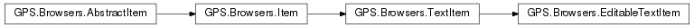
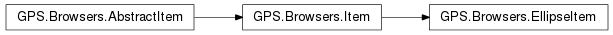
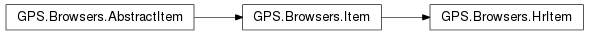
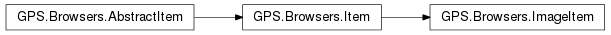
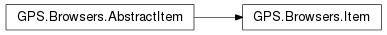
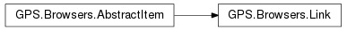
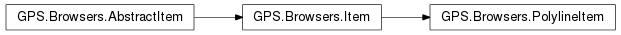
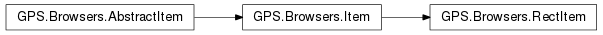
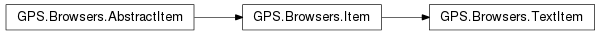

18. Scripting API reference for GPS.Browsers¶
Interface to the graph drawing API in GPS.
18.1. Classes¶
18.1.1. GPS.Browsers.AbstractItem¶
-
class
GPS.Browsers.AbstractItem¶ This abstract class represents either items or links displayed in the canvas, and provide common behavior.
-
height¶ The height of the item (in its own coordinate space)
Type: (read-write) int
-
is_link¶ Whether the item is a link.
Type: (read-only) bool
-
parent¶ The parent item (to which self was added)
Type: (read-only) GPS.Browsers.Item
-
style¶ The style applied to the item
Type: (read-write) GPS.Browsers.Style
-
width¶ The width of the item (in its own coordinate space)
Type: (read-write) int
-
x¶ The position of the item. For a toplevel item, this is the position within the diagram. For an item that was added to another item, this is the position within its parent.
Type: (read-write) int
-
y¶ The position of the item. For a toplevel item, this is the position within the diagram. For an item that was added to another item, this is the position within its parent.
Type: (read-write) int
-
hide()¶ Temporarily hide the item, until GPS.Browsers.Item.show is called.
-
show()¶ Show an item that has been hidden.
-
18.1.2. GPS.Browsers.Diagram¶
-
class
GPS.Browsers.Diagram¶ A diagram contains a set of items.
You can extend this class with your own, and declare the following special subprograms which are called automatically by GPS:
def on_selection_changed(self, item, *args): ''' Called when the selection status of item has changed. :param GPS.Browsers.Item item: the item that was selected or unselected. This is set to None when all items were unselected. '''
-
Selection= <GPS.__enum_proxy object>¶
-
items= None¶ The list of all
GPS.Browsers.Itemin the diagram. This only include toplevel items, you will need to iterate their own children if you need access to them. This also includes links.
-
selected= None¶ The list of selected
GPS.Browsers.Item
-
__init__()¶ Creates a new empty diagram.
-
add(item)¶ Add a new item to the diagram. The coordinates of the item are set through item.set_position().
Parameters: item (GPS.Browsers.Item) – the item to add
-
changed()¶ This method should be called whenever the contents of the diagram has changed, or some items have been modified. This will trigger a re-display of the diagram. Not needed when you only added a new item to the diagram.
-
clear()¶ Remove all items from the diagram.
-
clear_selection()¶ Unselect all items in the diagram.
-
is_selected(item)¶ Whether the item is selected.
Parameters: item (GPS.Browsers.Item) – the item to check Returns: a boolean
-
links(item)¶ Return the incoming or outgoing links for item (i.e. all links for which item is a source or a target)
Parameters: item (GPS.Browsers.AbstractItem) – the source of the links Returns: list of GPS.Browsers.AbstractItem
-
static
load_json(file, diagramFactory=None)¶ Load a JSON file into a series of diagrams.
The format of the file is described below, and is basically a serialization of all the style and object attributes mentioned elsewhere in this documentation.
The JSON file should contain an object (“{...}”) with the following attributes:
styles: this is a dict of style objects. Each style is itself described as an object whose attributes are any of the valid parameters for
GPS.Browsers.Style.__init__().There are a few special ids that can be used to set the default properties or styles for the items defined in this json file. For instance, if the id starts with “__default_props_” followed by one of the valid item type, the object can define the default attribute for any of the valid attributes of items.
If the id starts with “__default_style_”, the object defines the style properties for any of the item type.
For instance:
{"styles": { '__default_props_text': {"margin": [0, 5, 0, 5]}, '__default_props_rect': {"minWidth": 200}, '__default_style_text': {"fontName": "arial 10"}, 'customStyle1': {"stroke": "blue"} }}
templates: this is a dictionary of diagram objects (as described below. They are not created or inserted in the diagram. However, if a later description inside diagrams contains an attribute ‘template’, then that attribute will be replaced by all the attributes defined in the template. For instance:
'templates': { '#tmpl0': { 'type': 'rect'; 'width': 10 } }, 'diagrams': [ { 'template': '#tmp10', 'height': 20 } ]
is equivalent to putting the type and the width inline in the objet definition, but provide better sharing.
diagrams: this is a list of diagram object. A single file can contain multiple diagrams, but a browser window always only displays a single diagram.
Each diagram object has two possible attributes:
- items: this is a list of item objects (see below)
- links: this is a list of link objects (see below)
An item object is itself described with a JSON object, with the following possible attributes:
- id: an optional string, which defines an id for an object.
This id can be used when creating links. It is also stored
as an id attribute in the instance of
GPS.Browsers.Itemthat is created. - data: this field is stored as is in the generated instance of GPS.Browsers.Item. It can be used to store any application specific data, in particular since the instance will be passed to the callbacks to handle click events.
- x, y, anchorx, anchory: optional float attributes. See
the description of
GPS.Browsers.Item.set_position(). - width, height: the size of the item. This can be specified as a positive float to specify a size in pixels. Alternatively it can be set to GPS.Browsers.Item.Size.FIT (-1) so that the item and its margins occupy the full width of its parent (for a vertical layout) or the full height (for a horizontal layout). It can also be set to GPS.Browsers.Item.Size.AUTO (-2) so that the item occupies the minimal size needed for all of its children. The default is FIT.
- style: an optional string (which then references the id of one of the styles defined in the “styles” attribute described above, or an inline JSON object that describes a style as above.
- type: the type of the item. Valid values are “rect”, “hr”, “ellipse”, “polyline” or “text” (see the corresponding classes in this documentation). This attribute is optional, and will be guessed automatically in some cases. For instance, when the object also has a text attribute, it is considered as a text item. If it has a “points” attribute it is considered as a polyline item. The default type is “rect”.
- minWidth and minHeight: the minimal size for an item. See
GPS.Browsers.Item.set_min_size(). - vbox and hbox: list of items, which are the children of the current item. These children are organized either vertically or horizontally (only one of the two attributes can be specified, vbox takes precedence).
When an item is created as a child of another one (in its parent’s vbox or hbox), it may have the following additional attributes. See
GPS.Browsers.Item.add()for more information.- margin: the margins around the item. This is either a single float (in which case all margins are equal), or a list of four floats which give the top, right, bottom and left margins respectively.
- align: one of the values from
GPS.Browsers.Item.Align. In a JSON file, though, you can only use the corresponding integer values. - float: whether the item is set as floating
- overflow: one of the integer values for
GPS.Browers.Item.Overflow
Text objects (corresponding to
GPS.Browsers.TextItem) have the following additional attributes:- text: the text to display.
- directed: one of the values from
GPS.Browsers.TextItem.Text_Arrow, which indicates that an extra arrow should be displayed next to the text. This is mostly relevant when the text is used as a label on a link, in which case the actual arrow will be computed automatically from the orientation of the link.
Hr objects (corresponding to
GPS.Browsers.HrItem) have the following additional attributes:- text: the text to display.
Polyline objects (corresponding to
GPS.Browsers.PolylineItem) have the following additional attributes:- points: the points that describe the contour of the object, as a list of floats. They are grouped into pairs, each of which describes the coordinates of a point.
- close: whether the last point should automatically be linked to the first.
- relative: an optional boolean (defaults to false) that indicates whether the points are coordinates relative to the item’s topleft corner, or are relative to the previous point.
Rect items (corresponding to
GPS.Browsers.RectItem) have the following additional attributes:- radius: optional float indicating the radius for the corners of the rectangle.
A link object contains the following attributes (see
GPS.Browser.Linkfor more information on the parameters):id: an optional string id for the link, if you need to create links to it.
from and to: these are record with one mandatory field, ref, which is the id of one of the objects or links created previously. In addition, these records can also specify the following attributes:
- anchorx, anchory: floats in the range 0.0 .. 1.0 which specify where the item is attached in its target item
- side takes its value from GPS.Browsers.Link.Side, and is used to force the link to emerge from one specific side of the item.
- label is a JSON object describing an item, as described earlier. This will generally be a text item.
label: one of
GPS.Browsers.Item, to display in the middle of the link. This will generally be a text item. If it is directed, the arrow will be computed from the orientation of the link.route: one of
GPS.Browsers.Link.Routing(as integer) to indicate how the link is displayed.waypoints: a list of floats, which will be grouped into pairs to define waypoints. See
GPS.Browsers.Link.set_waypoints(). An alternative definition is to use an object with two fields, points which is the list of floats, and relative which is a bool indicating whether the points are in absolute coordinates or relative to the previous point.
Here is an example which draws two items linked together:
{"styles": {}, "diagrams": [ {"items": [ {"x": 0, "y": 0, "style": "customStyle1", "id": "first item", "width": 100, "height": 100, "vbox": [ {"text": "Name", "style": {"fontName": "arial 20", stroke:null}}, {"type": "hr", "text":"attributes"}, {"text": "+attr:integer"} ] }, {"x": 100, "y":200", "id": "second item", "text": "Annotation"}, ], "links": [ {"from": {"ref": "first item"}, "to": {"ref": "second item"}, "style": {"stroke": "blue", "dashes": [4, 4]}} ] } ] }
Parameters: - file (str) – an object that has a read() function, or the name of a file as a string.
- diagramFactory (callable) – a callback that creates a new instance of GPS.Browsers.Diagram or one of its derived classes. Typically, you could pass the class itself, since calling it will create a new instance. As a special case, the diagrams returned by this function include a special ids field, which is a dict mapping the id to the actual item.
Returns: the list of GPS.Browsers.Diagram objects created.
-
static
load_json_data(data, diagramFactory=None)¶ Load a JSON description and display the corresponding data. See
GPS.Browsers.Diagram.load_json()for more information on the format of the JSON file.
-
lower_item(item)¶ Lower the item, so that it is displayed below all other items.
Parameters: item (GPS.Browsers.Item) – the item to lower.
-
raise_item(item)¶ Raise the item, so that it is displayed above all other items.
Parameters: item (GPS.Browsers.Item) – the item to raise.
-
remove(item)¶ Remove an item from the diagram.
Parameters: item (GPS.Browsers.Item) – the item to remove.
-
select(item)¶ Select the item. If the diagram is set up for single selection, any previously selected item is first unselected.
Parameters: item (GPS.Browsers.Item) – the item to select.
-
set_selection_mode(mode='GPS.Browsers.Diagram.Selection.SINGLE')¶ Controls the selection in the views associated with this buffer. It can be used to indicate whether a single item or multiple items can be selected.
Parameters: mode (GPS.Browsers.Diagram.Selection) – the type of selection
-
unselect(item)¶ Unselect the item.
Parameters: item (GPS.Browsers.Item) – the item to select.
-
18.1.3. GPS.Browsers.EditableTextItem¶
-
class
GPS.Browsers.EditableTextItem¶ A text item (
GPS.Browsers.TextItem) that can be double-clicked on to edit its text. SeeGPS.Browsers.View.start_editing()if you need to start the editing from the script, instead of having the user double-click on the item.-
editable= True¶ Whether this item is currently editable by the user
-
__init__(style, text, directed='GPS.Browsers.TextItem.Text_Arrow.NONE', on_edited=None)¶ Creates a new editable text item
Parameters: - style (GPS.Browsers.Style) – how to draw the item
- text (str) – the text to display.
- directed (bool) – whether to draw an additional arrow next to the text. This can be used for instance when the text is next to a link, and indicates in which direction the text applies.
- on_edited – A callback whenever the text has been modified interactively by the user. The profile is on_edited(textitem, old_text)
-
18.1.4. GPS.Browsers.EllipseItem¶
-
class
GPS.Browsers.EllipseItem¶ An item which displays an ellipse or a circle. It can contain children.
-
__init__(style, width=-1.0, height=-1.0)¶ Create a new ellipse/circle item, inscribed in the box given by the width and height.
Parameters: - style (GPS.Browsers.Style) – how to draw the item
- width (float) – used to force a specific width for the item. If negative or null, the width is computed from the children of the item.
- height (float) – similar to width.
-
18.1.5. GPS.Browsers.HrItem¶
-
class
GPS.Browsers.HrItem¶ A horizontal-line item, with optional text in the middle. This is basically represented as:
—– text —–-
__init__(style, text='')¶ Creates a new horizontal line.
Parameters: - style (GPS.Browsers.Style) – how to draw the item
- text (str) – the text to display.
-
18.1.6. GPS.Browsers.ImageItem¶
-
class
GPS.Browsers.ImageItem¶ An item that shows an image.
-
__init__(style, filename, width=-1.0, height=1.0)¶ Creates a new image item.
Parameters: - style (GPS.Browsers.Style) – how to draw the border of the item
- filename (str) – the filename to load.
- width (float) – forcing a size for the item (the default is to use the image’s own size)
- height (float) – forcing a size for the item (the default is to use the image’s own size)
-
18.1.7. GPS.Browsers.Item¶
-
class
GPS.Browsers.Item¶ This abstract class represents any of the items that can be displayed in a browser. Such items have an outline, whose form depends on the type of the item (rectangular, polygone,...) They can almost all contain children. Unless you specified an explicit size for the item, its size will be computed to include all the children. The children are stacked either vertically or horizontally within their container, so that one child appears by default immediately below or to the right of the previous one. Extra margins can be specified to force extra space.
-
Align= <GPS.__enum_proxy object>¶
-
Layout= <GPS.__enum_proxy object>¶
-
Overflow= <GPS.__enum_proxy object>¶
-
Size= <GPS.__enum_proxy object>¶ Describes the size of an item. In general, the size is given as a number of pixels. There are however a few special values.
- FIT indicates that the item is sized so that it fits exactly in its parent container, including the child margins. So for instance given a parent with a vertical layout, of width 200px, and a child with 10px margins both on left and right, then the child’s width will be set to 180px.
- AUTO indicates that the item’s size is computed so that all of its children fit exactly inside the item.
-
children= None¶ The list of
GPS.Browsers.Itemthat were added to the item. This property is not writable.
-
__init__()¶ Will raise an exception, this is an abstract class.
-
add(item, align='GPS.Browsers.Item.Align.START', margin=(0, 0, 0, 0), float=False, overflow='GPS.Browsers.Item.Overflow.PREVENT')¶ Add a child item. This child will be displayed as part of the item, and will move with it. The size of the child will impact the size of its parent, unless you have forced a specific size for the latter.
Parameters: - item (GPS.Browsers.Item) – the item to add
- align (GPS.Browsers.Item.Align) – How the item should be aligned within its parent. When the size of the child is computed automatically, it will have the same width as its parent (for vertical layout) or the same height as its parent (for horizontal layout), minus the margins. In this case, the align parameter will play no role. But when the child is smaller than its parent, the align parameter indicates on which side an extra margin is added.
- margin (list_of_float) – Extra margin to each side of the item (resp. top, right, bottom and left margin). These a float values.
- float (bool) – Whether the child should be floating within its parent. This impacts the layout: by default, in a vertical layout, all children are put below one another, so that they do not overlap. However, when a child is floating, it will be put at the current y coordinate, but the next item will be put at the same coordinate as if the child was not there.
- overflow (GPS.Browsers.Item.Overflow) – Whether the child’s size should impact the parent size. For instance, you might want to display as much text as possible in a box. When overflow is set to PREVENT, the box will be made as large as needed to have the whole text visible (unless you have specified an explicit size for the box, as usual). But when the overflow is set to HIDE, the box will get its size from the other children, and the text will simply be ellipsized if it does not fit in the box.
-
get_parent_with_id()¶ Returns either self (if it has an “id” attribute), or its first parent that does. It might return None if nothing is found. Such “id” attributes are in general used to identify items with semantic information, rather than just display purposes.
-
recurse()¶ A generator that returns self and all its child items. For instance:
- for it in item.recurse():
- ...
-
set_child_layout(layout='GPS.Browsers.Item.Layout.VERTICAL')¶ Choose how children are organized within this item.
Parameters: layout (GPS.Browsers.Item.Layout) – if set to VERTICAL, then the child items are put below one another, otherwise they are put next to one another.
-
set_height_range(min=-1.0, max=-1.0)¶ Constrain the range of height for self. Self could be make larger if its children request a larger size, but will not smaller than the given size. The default is for items to use the full width of their parent (for vertical layout) or the full height (for horizontal layout), and the size required by their children for the other axis. This overrides any previous call to set_size
Parameters:
-
set_position(x=None, y=None, anchorx=0.0, anchory=0.0)¶ Indicates the position of the item. This is the position within its parent item, or if there is no parent this is the absolute position of the item within the diagram. Calling this function should always be done for toplevel items, but is optional for children, since their position is computed automatically by their container (which is especially useful with text items, whose size might be hard to compute).
Parameters: - x (float) – coordinates relative to parent or browser.
- y (float) – coordinates relative to parent or browser.
- anchorx (float) – what position within the item x is refering to. If set to 0.0, x indicates the left side of the item. If set to 0.5, x indicates the middle of the item. 1.0 indicates the right side of the item.
- anchory (float) – what position within the item y is refering to.
-
set_size(width=-1.0, height=-1.0)¶ Forces a specific size for self. This overrides any previous call to set_width_range and set_height_range.
Parameters:
-
set_width_range(min=-1.0, max=-1.0)¶ Constrain the range of width for self. Self could be make larger if its children request a larger size, but will not smaller than the given size. The default is for items to use the full width of their parent (for vertical layout) or the full height (for horizontal layout), and the size required by their children for the other axis. This overrides any previous call to set_size
Parameters:
-
toplevel()¶ The item that contains self, or self itself if it is already a toplevel item. This is simply computed by using the
GPS.Browsers.AbstractItem.parent()property.Returns: a GPS.Browsers.AbstractItem
-
18.1.8. GPS.Browsers.Link¶
-
class
GPS.Browsers.Link¶ A line between two items. When the items are moved, the line is automatically adjusted to stay connected to those items.
-
Routing= <GPS.__enum_proxy object>¶
-
Side= <GPS.__enum_proxy object>¶
-
fromLabel= None¶ Returns a GPS.Browsers.Item element (or None) corresponding to the link’s source label.
-
label= None¶ Returns a GPS.Browsers.Item element (or None) corresponding to the link’s label.
-
source= None¶ The source GPS.Browsers.Item for the link
-
target= None¶ The target GPS.Browsers.Item for the link
-
toLabel= None¶ Returns a GPS.Browsers.Item element (or None) corresponding to the link’s target label.
-
__init__(origin, to, style, routing='GPS.Browsers.Link.Routing.STRAIGHT', label=None, fromX=0.5, fromY=0.5, fromSide='GPS.Browsers.Link.Side.AUTO', fromLabel=None, toX=0.5, toY=0.5, toSide='GPS.Browsers.Link.Side.AUTO', toLabel=None)¶ Creates a new link attached to the two items FROM and TO.
Parameters: - from (GPS.Browsers.Item) – the origin of the link.
- to (GPS.Browsers.Item) – the target of the link.
- style (GPS.Browsers.Style) – how to draw the item
- routing (GPS.Browsers.Link.Routing) – the routing algorithm to use to compute how the link is displayed. A STRAIGHT link takes the shortest route between the two items, whereas an ORTHOGONAL link only uses horizontal and vertical lines to do so. A CURVE is almost the same as a straight link, but is slightly curves, which is useful when several links between the same two items exist. An ORTHOCURVE link uses bezier curves to link the two items.
- fromX (float) – the position within the origin where the link is attached. This is a float in the range 0.0 .. 1.0. The link itself is not displayed on top of the origin box, but changing the attachment point will change the point at which the link exits from the origin box.
- fromY (float) – similar to fromY, for the vertical axis
- fromSide (GPS.Browsers.Link.Side) – This can be used to force the link to exist from a specific side of its toplevel container. For instance, if you set fromX to 0.0, the link will always exit from the left side of self. But if self itself is contained within another item, it is possible that the line from the left side of self to the target of the link will in fact exit from some other place in the container item. Setting fromSide to GPS.Browsers.Link.Side.LEFT will make sure the link exits from the left side of the parent item too.
- label (GPS.Browsers.Item) – a label (in general a TextItem) to display in the middle of the link.
- fromLabel (GPS.Browsers.Item) – a label (in general a TextItem) to display next to the origin of the link.
- toX (float) – This plays a similar role to fromX, but it can also have a negative value. In such a case, GPS will try to move the end position of the link along the border of the item, so as to get a horizontal or vertical segment. If this is not possible, the usual behavior applies to abs(toX) to find the attachment of the link in the item.
- toY (float) – similar to toX
- toLabel (GPS.Browsers.Item) – a label (in general a TextItem) to display next to the target of the link.
-
recurse()¶ Returns self and its labels. This matches GPS.Browsers.Item.recurse. Note that a label doesn’t have self as its parent, so you cannot get back to the link from one of its labels.
-
set_waypoints(points, relative=False)¶ Force specific waypoints for link. The lines will pass through each of these points when it is routed as straight or orthogonal lines. By default, the coordinates are absolute (in the same coordinate system as the items). If however you specify relative coordinates, then each point is relative to the previous one (and the first one is relative to the link’s attachment point on its origin item).
Parameters: - points (list_of_float) – The floats are grouped into pair, each of which describes the coordinates of one points.
- relative (bool) – whether the coordinates are relative to the previous point, or absolte.
-
18.1.9. GPS.Browsers.PolylineItem¶
-
class
GPS.Browsers.PolylineItem¶ An item which displays a set of connected lines. It can be used to draw polygons for instance, or simple lines.
-
__init__(style, points, close=False)¶ Create a new polyilne item.
Parameters: - style (GPS.Browsers.Style) – how to draw the item
- points (list_of_float) –
each points at which line ends. The coordinates are relative to the top-left corner of the item (so that (0,0) is the top-left corner itself). The floats are grouped into pair, each of which describes the coordinates of one points. For instance:
(0,0, 100,100)displays a single line which goes from the top-left corner to a point at coordinates (100,100).
- close (bool) – whether the last point should automatically be linked to the first. This ensures the polygone is properly closed and can be filled.
-
18.1.10. GPS.Browsers.RectItem¶
-
class
GPS.Browsers.RectItem¶ A special kind of item, which displays a rectangular box, optionally with rounded corner. It can contain children items.
-
__init__(style, width=-1.0, height=-1.0, radius=0.0)¶ Creates a new rectangular item.
Parameters: - style (GPS.Browsers.Style) – how to draw the item
- width (float) – used to force a specific width for the item. If this is null or negative, the width will be computed from the children of the item.
- height (float) – used to force a specific height, which will be computed automatically if height is negative or null
- radius (float) – the radius for the angles.
-
18.1.11. GPS.Browsers.Style¶
-
class
GPS.Browsers.Style¶ This class provides multiple drawing attributes that are used when drawing on a browser. This includes colors, dash patterns, arrows and symbols,... Very often, such a style will be reused for multiple objects.
-
Align= <GPS.__enum_proxy object>¶
-
Arrow= <GPS.__enum_proxy object>¶
-
Symbol= <GPS.__enum_proxy object>¶
-
Underline= <GPS.__enum_proxy object>¶
-
__init__(stroke='black', fill='', lineWidth=1.0, dashes=[], sloppy=False, fontName='sans 9', fontUnderline='GPS.Browsers.Style.Underline.NONE', fontStrike=False, fontColor='black', fontLineSpacing=0, fontHalign='GPS.Browsers.Style.Align.LEFT', arrowFrom='GPS.Browsers.Style.Arrow.NONE', arrowFromLength=8.0, arrowFromAngle=0.4, arrowFromStroke='black', arrowFromFill='', arrowFromWidth=1.0, arrowTo='GPS.Browsers.Style.Arrow.NONE', arrowToLength=8.0, arrowToAngle=0.4, arrowToStroke='black', arrowToFill='', arrowToWidth=1.0, symbolFrom='GPS.Browsers.Style.Symbol.NONE', symbolFromStroke='black', symbolFromDist=16.0, symbolFromWidth=1.0, symbolTo='GPS.Browsers.Style.Symbol.NONE', symbolToStroke='black', symbolToDist=16.0, symbolToWidth=1.0, shadowColor=None, shadowOffsetX=2.0, shadowOffsetY=2.0)¶ Constructs a new style. This function takes a very large number of parameters, but they are all optional. Not all of them apply to all objects either.
Parameters: - stroke (str) – the color to use to draw lines. The format is one of “rgb(255,255,255)”, “rgba(255,255,255,1.0)” or “#123456”. Transparency is supported when using rgba.
- fill (str) –
how closed objects should be filled. The format is either a color, as for stroke, or a string describing a gradient as in “linear x0 y0 x1 y1 offset1 color1 offset2 color2 ...”
where (x0,y0) and (x1,y1) define the orientation of the gradient. It is recommended that they are defined in the range 0..1, since the gradient will be automatically transformed to extend to the whole size of the object. The rest of the parameters are used to define each color the gradient is going through, and the offset (in the range 0..1) where the color must occur. For instance “linear 0 0 1 1 0 rgba(255,0,0,0.2) 1 rgba(0,255,0,0.2)”
- lineWidth (float) – the width of a line
- dashes (list_of_floats) – a dash pattern. The first number is the number of pixels which should get ink, then the number of transparent pixels, then again the number of inked pixels,... The pattern will automatically repeat itself.
- sloppy (boolean) – when true, no straight line is displayed. They are instead approximated with curves. Combined with a hand-drawing font, this makes the display look as if it has been hand-drawn.
- fontName (str) – the font to use and its size.
- fontUnderline (GPS.Browsers.Style.Underline) – The underline to use for the text
- fontStrike (boolean) – whether to strikethrough the text.
- fontColor (str) – the color to use for text.
- fontLineSpacing (int) – extra number of pixels to insert between each lines of text.
- fontHalign (GPS.Browsers.Style.Align) – How text should be aligned horizontally within its bounding box.
- arrowFrom (GPS.Browsers.Style.Arrow) – How should arrows be displayed on the origin of a line.
- arrowFromLength (float) – the size of an arrow.
- arrowFromAngle (float) – the angle for an arrow.
- arrowFromStroke (str) – the stroke color for the arrow.
- arrowFromFill (str) – the fill pattern for the arrow.
- arrowTo (GPS.Browsers.Style.Arrow) – same as arrowFrom, but for the end of a line
- arrowToLength (float) – similar to arrowFromLength
- arrowToAngle (float) – similar to arrowFromAngle
- arrowToStroke (str) – similar to arrowFromStroke
- arrowToFill (str) – similar to arrowFromFill
- symbolFrom (GPS.Browsers.Style.Symbol) – the extra symbol to display near the origin of a line.
- symbolFromStroke (str) – the stroke color to use for the symbol.
- symbolFromDist (float) – the distance from the end of the line at which the symbol should be displayed.
- shadowColor (str) – the color to use for shadows
-
18.1.12. GPS.Browsers.TextItem¶
-
class
GPS.Browsers.TextItem¶ An item that displays text (optionaly within a rectangular box).
-
TextArrow= <GPS.__enum_proxy object>¶
-
text= None¶ The text to display. This can be modified as needed, but you then need to call GPS.Browsers.Diagram.changed to let GPS know of the change.
-
__init__(style, text, directed='GPS.Browsers.TextItem.Text_Arrow.NONE')¶ Creates a new text item
Parameters: - style (GPS.Browsers.Style) – how to draw the item
- text (str) – the text to display.
- directed (bool) – whether to draw an additional arrow next to the text. This can be used for instance when the text is next to a link, and indicates in which direction the text applies.
-
18.1.13. GPS.Browsers.View¶
-
class
GPS.Browsers.View¶ A view shows a part of a diagram and its objects. Multiple views can be associated with the same diagram.
Although this class can be instantiated as is, it is most useful, in general, to extend it, in particular by adding a method on_item_clicked:
class My_View(GPS.Browsers.View): def on_item_double_clicked(self, topitem, item, x, y, *args): ''' Called when the user double clicks on a specific item. It is recommended to add "*args" in the list of parameters, since new parameters might be added in the future. :param GPS.Browsers.Item topitem: the toplevel item clicked on :param GPS.Browsers.Item item: the item clicked on. When the item was created from a JSON file (see :func:`GPS.Browsers.Diagram.load_json`), it contains additional fields like `data` and `id` that were extracted from JSON. This item is either topitem or a child of it. :param float x: the coordinates of the mouse within the item. :param float y: the coordinates of the mouse within the item. ''' def on_item_clicked(self, topitem, item, x, y, *args): ''' Called when the user releases the mouse button on a specific item. This method is called twice for a double-click (once per actual click). The parameters are the same as above. ''' def on_create_context(self, context, topitem, item, x, y, *args): ''' Called when the user has right-clicked on an item. This function should prepare the context for contextual menus, although it does not directly add contextual menu entries. Instead, declare those menus as usual with :class:`GPS.Contextual` or :func:`gps_utils.make_interactive`. :param GPS.Context context: the context. The function should add custom fields to this context. These fields can then be tested for the filter or the action associated with a :class:`GPS.Contextual`. ''' def on_key(self, topitem, item, key, *args): ''' Called when the user presses a keyboard key while the view has the focus. :param GPS.Browsers.Item topitem: the toplevel item clicked on :param GPS.Browsers.Item item: the specific item clicked on. :param int key: the key that was pressed (see Gdk.KEY_* constants) '''

-
Background= <GPS.__enum_proxy object>¶
-
diagram= None¶ The
GPS.Browsers.Diagramthat the view is referring to. This is a writable property.
-
editing_in_progress= False¶ A read-only property that indicates whether the user is currently interactively modifying the contents of an item (for instance an EditableTextItem). See
GPS.Browsers.View.start_editing()
-
scale= 1.0¶ The scaling factor for the view. This is a writable property
-
topleft= (0.0, 0.0)¶ The coordinates of the top-left corner of the view. This is a writable property
-
__init__()¶ Creates the python class instance, but does not associate it with any window yet. Before any of the other functions can be called, you first need to call self.create() to create the actual window. This creation is done in two steps, so that you can create your own class extending view. This is in particular needed to provide support for user interaction.
-
animate_item_position(item, x, y, duration=0.4)¶ Moves an item to a new position. This is animated, i.e. the item will go through various steps before reaching that position.
Parameters: - item (GPS.Browsers.Item) – the item to move
- x (float) – coordinates relative to parent or browser.
- y (float) – coordinates relative to parent or browser.
- duration (float) – how long the animation should take
-
cancel_editing()¶ Cancel any interactive editing that might be taking place
-
center_on(point, xpos=0.5, ypos=0.5)¶ Scrolls the view so that the point is at the given position within the view (in the middle if xpos and ypos are both 0.5, or to the left if xpos is 0.0, or the right if xpos is 1.0, and so on).
Parameters: point (tuple) – the point
-
create(diagram, title, save_desktop=None, snap_to_grid=True, snap_to_guides=False, toolbar='Browser')¶ Creates a new view that shows the given diagram. This view is automatically made visible in GPS.
Parameters: - diagram (GPS.Browsers.Diagram) – the diagram to display.
- title (str) – the title used for the notebook tab.
- save_desktop (func(child)) – An optional callback when GPS is
saving the desktop. It is passed the MDIWindow in which the view
was put, and should return a string to store in the desktop (see
GPS.MDI.add()for more information). This is generally not useful, unless you are writting a custom python module, in which case the parameter should be set to “module._save_desktop”. See the documentation formodules.pyfor more information. - snap_to_grid (bool) – whether items should preferably align on the grid when they are moved (ie they might be moved an additional small amount so that they are properly aligned). Snapping is systematically disabled when the user moves the item while pressing shift.
- snap_to_guides (bool) – whether items should preferably align on smart guides. These guides are generated for particular points of interests of the other items (typically the top, middle and bottom of the bounding box). This feature is useful to help user align items.
- toolbar (str) – The name of the toolbar definition to use for the
local toolbar of the browser. Such definitions are found in the
file share/gps/menus.xml in the GPS install. If the name is not
defined in that file, a new definition will be used that extends
the standard browsers toolbar. You can later add custom actions
to the toolbar by using
GPS.Action.button()
-
export_pdf(filename, format='a4', visible_only=True)¶ Creates a PDF file with the contents of the view.
Parameters: - filename (GPS.File) – the name of the file to create or override.
- format (str) – one of “a4”, “a4_portrait”, “a4_landscape”, or similar variants with “a3” and “letter”. It can also be a string “width,height” where the size is given in inches.
- visible_only (bool) – if True, the output will match was is visible in the view. If False, the output will include the whole contents of the diagram.
-
scale_to_fit(max_scale=4.0)¶ Scale and scroll the view so that all the items in the model are visible.
Parameters: max_scale (float) – maximum scaling factor to allow.
-
scroll_into_view(item, duration=0.0)¶ Scrolls the view as little as possible so that item becomes visible.
Parameters: - item (GPS.Browsers.Item) – the item to show
- duration (float) – if not null, scrolling will be animated over that period of time.
-
set_background(type, style=None, size=20.0)¶ Set the type of background to display in the view.
Parameters: - type (GPS.Browsers.View.Background) – the type of background to display.
- style (GPS.Browsers.Style) – the style to use for the drawing. Depending on the style, the stroke or the fill should be set (or perhaps both). For instance the COLOR background uses the fill pattern (color or gradient). If you are using GRID, the fill should be unset, but the stroke should be set. When using a gradient, it is not resized to the size of the view (as opposed to what is done for items for instance), so it should be something like linear 0 0 1000 1000 0 black 1 yellow
- size (float) – the size of the grid, when using GRID or DOTS.
-
set_read_only(readonly=True)¶ A read-only view does not allow users to move items. It is still possible to click on items though, or zoom and scroll the view.
Parameters: readonly (bool) – whether the view is read-only.
-
set_selection_style(style)¶ The style used to highlight the selected items (see
GPS.Browsers.Diagram.set_selection_mode()).Parameters: style (GPS.Browsers.Style) – the style to use.
-
start_editing(item)¶ If item is editable, start interactive editing, as if the user had clicked on it.
-